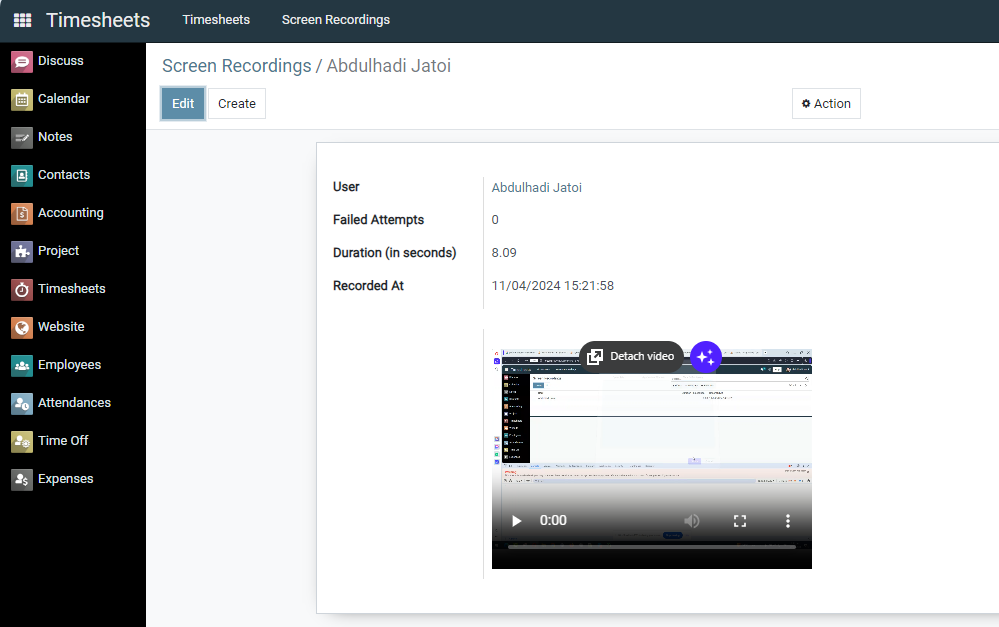
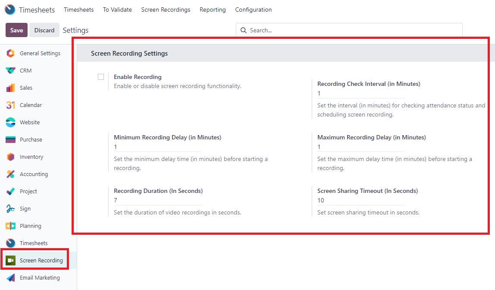
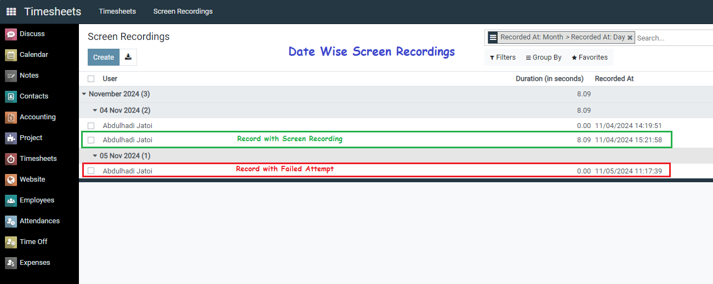
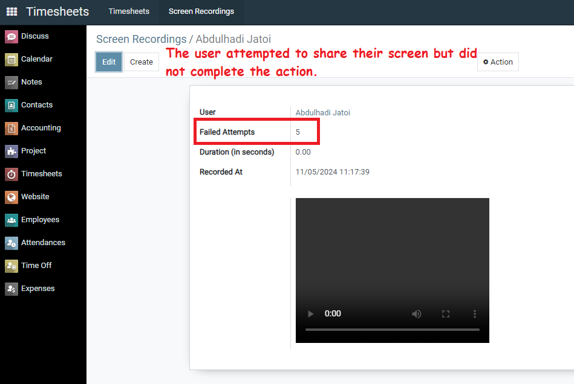

This app introduces an automated and configurable screen recording feature for monitoring employee activity based on attendance check-in and check-out status. It allows administrators to set custom intervals for scheduling screen recordings and adjust timeout settings, recording durations, and scheduling delays.
This tool is perfect for businesses looking to track employee engagement seamlessly and non-intrusively within Odoo.
This app offers a structured and configurable solution to employee activity monitoring, making it ideal for businesses aiming to optimize productivity tracking with minimal overhead.

The app settings allow for a high degree of customization

Set a timeout period for screen-sharing permission. If an employee fails to share the screen within this interval, the session is marked as a failed attempt. Track failed attempts with a counter, allowing you to monitor compliance with recording requests.


softwarebox18@gmail.com